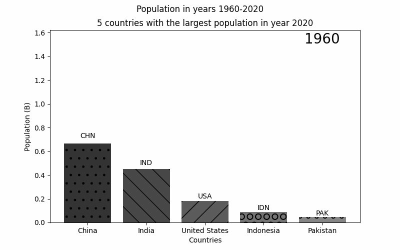
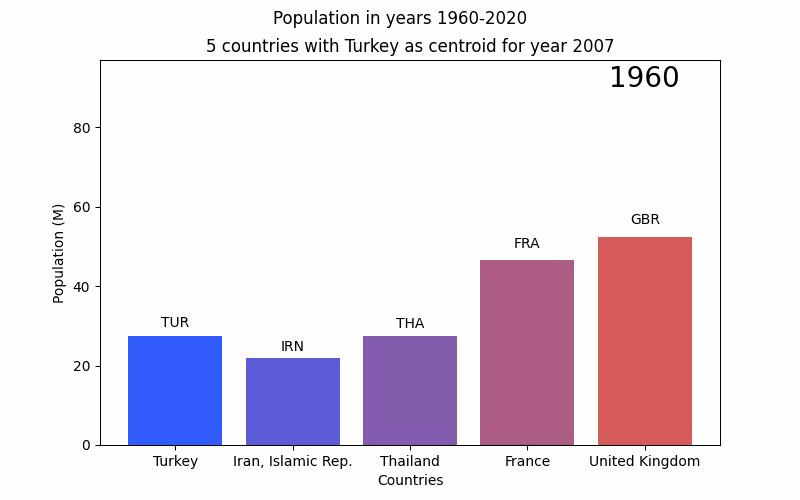
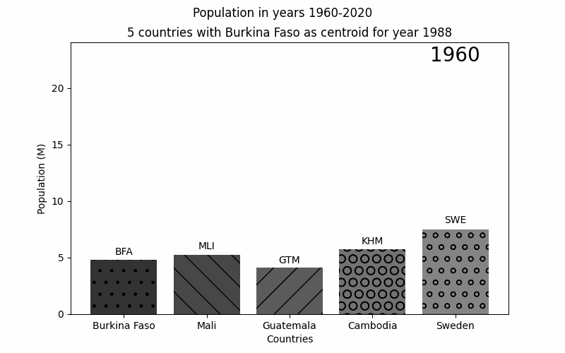

Nice to meet you

It can be seen that while China maintains the largest population, India has recently experienced the largest population growth. Representation is now available in color as well as greyscale.


These graphs are generated randomly, so there isn't much I can say about it :) The size has been tweaked to avoid country names overlap, but due to randomness such behaviour might still be possible.

These graphs still have some randomness to them, but we can see that Poland has initially maintained a steady growth rate, which in the 21st century reduced into a slow decline